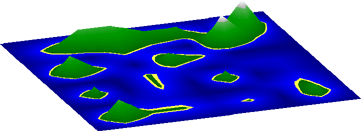
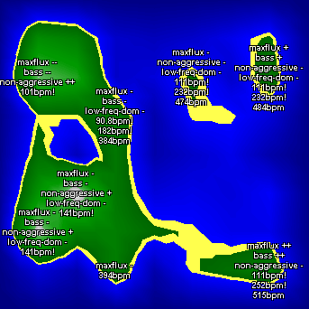

Visualizing Large Music Collections
One interesting problem in dealing with very large music collections is how to visualize such a collection. The nested menus of genre/artist/album/song method that most players such as the iPod use fail miserably as the size of the music collection gets very large. One method for visualizing large collections of music that is emerging in the music information retrieval research community is to use Self-Organizing-Maps (SOM) to layout and display songs. A SOM attemps to represent a high dimensional space through the use of self-organizing neural networks.
MIR researcher Elias Pamplak pioneered the use SOMS in his "Islands of Music" project. This project explores how to help the user explore vast amounts of music in an efficient way. Islands of music are generated automatically based on psychoacoustics models and self-organizing maps.


Images from 'Islands of Music' by Elias Pampalk
Self-organizing-maps are an appealing way to visualize music because they are easy to understand. People have experience with geographic maps and can tranfer the skill to SOMs. On the other hand, SOMs are computationally expensive to generate.
There's an excellent tutorial on SOMs written by Tom Germano at this page: Self Organizing Maps. He includes a Java applet demonstration of SOMs.